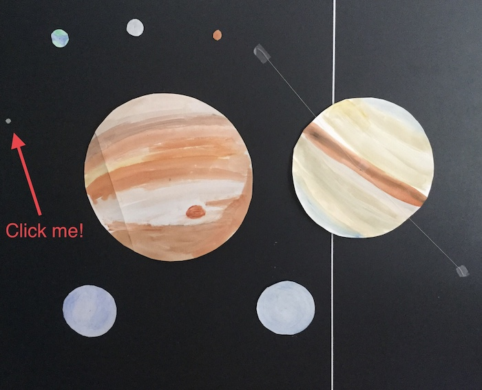
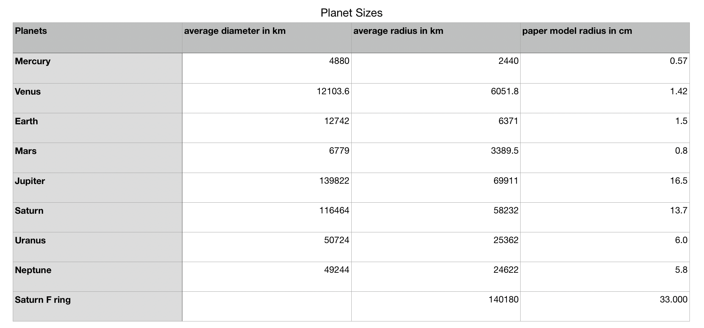
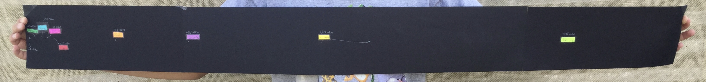
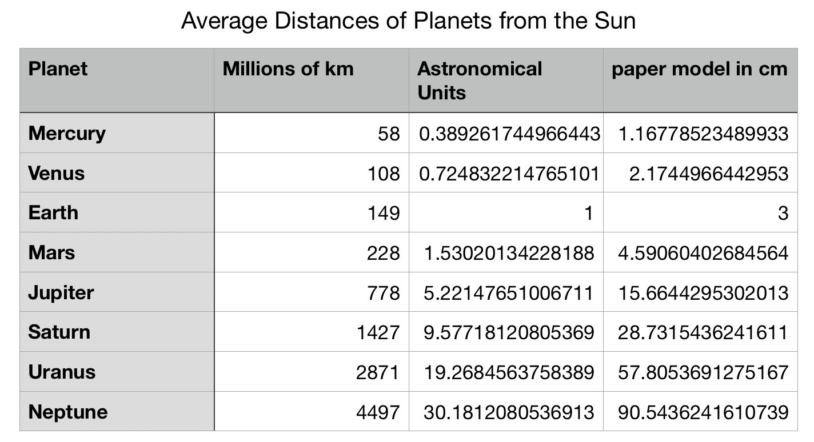

The reason I made two models and not just one is that the planets would be really small and spread apart. The planets are many millions of kilometers apart, but only a couple hundred kilometers in diameter. It would be possible to do, but impossible to fit that all in one picture.
(click the planets to see some information about them)
This model shows the relative sizes of planets. There are many problems with this model. First of all, Saturn's rings are much smaller relative to Saturn. In real life, Saturn's rings are 0.02 kilometers wide. Secondly, there are many things I have left out. In this model I have not included:
The reason the sun is not in this model is that it is so big. If I did make the sun, it would be 655.5 cm in diameter. That's about 21 feet and 5 inches. We wouldn't have enought paper or watercolors to make that!
To sum up, this model is not a model of the full solar system. It only includes the planets. Here is a chart of the information I used to make this:
In this model, the scale is one earth diameter = 3 cm (or 12742 km = 3 cm)
Keep Scrolling! →→→
This model has the same faults as the last one, exept I put a dot down for the sun.
Here is a chart of information I used to make this:
The scale for this model is the distance between earth and the sun is 3 cm.